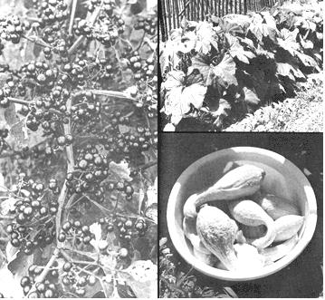

More Food From Less Land
Read how Coggins learned to grow ten times more poundage off the same plot of organically-rich ground by (1) planting jumbo varieties of vegetables, (2) concentrating on the heavy yielders and (3) doublecropping.
By JACK ROLAND COGGINS
May/June 1972
I've got a big family to feed and the food production aspect of gardening is serious business for me. So serious, that after five years of experimenting and testing, I've learned to grow ten times more poundage off the same plot of organically-rich ground. I do it by (1) planting jumbo varieties of vegetables, (2) concentrating on the heavy yielders and (3) doublecropping.
PLANT GIANT VEGETABLES
When you're feeding five to 20 people, it helps to grow the jumbos. Things like 20-pound cabbages, 50-pound squash, 40-pound watermelons, 2 1/2 pound onions, 1 1/4-pound potatoes and mature broccoli bigger than your own head!
The secret? Just plant seeds of the right varieties. Such naturally big vegetables are not novelties. They're mild, tender and all-around top quality . . . they just put more on the table, in jars and the freezer. Let's look at a few.
I now grow two kinds of broccoli. One, Early Spartan, matures in 58 days and provides delicious medium-size heads for very early table use. My second-and main-broccoli crop is Hybrid Neptune. Its heads are a foot or more in diameter and ready for harvest in about 70 days. With this giant, very little space and effort are required to grow ample quantities of the vegetable for canning and freezing.
I used to plant all kinds of peas. Now I rely only on Progress No. 9. It's early. It's quality. In my gardens, this one variety yields more pods to the vine, more peas to the pod, than any other I've tried. And size! I've measured many green, round, shelled Progress No. 9 peas over a half-inch in diameter . . . which means more pounds in the freezer.
Giant pumpkins? Connecticut Field and Big Max are the answer.
Both are outstanding for pies and, with special culture and care, Big Max will weigh out at a hundred pounds. I prefer to let my pumpkins just grow naturally, though, and harvest a greater number weighing 30 to 40 pounds. That's big enough . . . and much more convenient to handle.
My Hybrid Big Boy tomatoes range up to two pounds apiece. Gurney's Crimson Giant tops that with some individual fruit weighing out at 2 1/2 pounds and Trip-L-Crop or Giant Tree tomatoes also produce whoppers.
Kennebec potatoes (outstanding in flavor, texture and keeping quality) tend to grow so big that some folks plant them closer together to keep the size down. Many of mine weigh a pound and a quarter, and three potatoes that size feeds six people.
Many seed companies feature giant vegetables in their mail-order catalogs and it's easy to learn more about such varieties. Gurney Seed & Nursery Company, Yankton, South Dakota 57078 even offers a special low price on a collection of ten jumbos: giant cabbage, cantaloupe, corn, cucumber, onion, pumpkin, radish, squash, tomato and watermelon.
GROW THE HEAVY YIELDERS
Another way to get more food from minimum acreage is by concentrating on the varieties which yield heaviest over the longest period of time.
The Garden Huckleberry, for example, is an astonishing producer of fine large berries for pies, jam and sauce. An annual, the plant is raised each season from seed and handled much the same as tomatoes. The berries, green in the beginning, should not be harvested as soon as they turn blue-black and glossy. Wait a few more weeks until the fruit feels slightly soft under finger pressure.
Don't destroy the plants after that first harvest, either. They quickly put on a second crop that can be gathered before cold weather sets in. We don't have time to make Garden Huckleberry jam during the summer so we simply wash the fruit,' put it in freezer bags and freeze it whole and uncooked. The following winter, when there's more time for indoor activities, we cook the berries down for pies, jams and sauces. I used to wonder why my cucumber vines blossomed like crazy but put on very few cukes. Then a fellow gardener advised that the way to get bumper crops is to plant the varieties which produce all-female blooms (regular cuke vines are 80% male and only 20% female). When I tried Mrs. Pickler (a cucumber variety also called Spartan Champion ), just about every blossom set fruit. Pickles, pickles, pickles from just a few hills. Burpee's New Everbearing Hybrid (7 to 8 inches long) is a whopper cropper too. It produces far heavier than ordinary open-pollinated types and goes on yielding cukes after more common varieties quit. Many summer squash- Yellow Crookneck or Straightneck, Zucchini and Patty Pan -are extremely heavy producers and will yield pounds and pounds of vitamin-rich food per square foot of garden space. Two suggestions:
(1) Don't plant too much. During peak production you'll be harvesting from the same vines daily. I figure two hills will supply one person all the squash he'll want to eat year-round.
(2) Grow the yellow summer squash for freezing . . . it retains flavor and texture perfectly. Patty Pan and Zucchini tend to become a little rubbery when frozen, although both come through pretty well when canned. All strawberries bear well during ideal weather conditions (especially when picked daily) but Sparkle and Vesper are exceptional. If you can't irrigate or don't have time to water, Senator Dunlap -a very hardy and widely adaptable June-bearing variety-yields best under hot, dry conditions. Gem also bears heavily under adverse circumstances . . . right through June, all summer long and until the first frost. Dunlap and Gem provide me with all the strawberries I need in minimal space and with very little effort on my part. There are many more fruits and vegetables which are heavy yielders. It'll take you a while to find them all but, in general, if the word "Prolific" appears on a seed pack . . . you've got a winner!
TRY DOUBLECROPPING
Doublecropping means growing two or more crops on the same ground during a single season. On fertile, organic-rich land it can be done without depleting the soil. In fact, the practice may build the soil.
Nature never leaves land barren during a growing season when she can help it. Spring, summer and fall . . . one crop of weeds (ground cover) supercedes another, providing shade for moisture retention, roots to prevent erosion and more dead plant debris to build the soil's humus content.
I've found that land on which early peas have been grown is ideal for planting late corn . . . which I follow with even later beans that restore nitrogen to the soil. On plots from which I harvest early beans, I plant second crops of celery, cauliflower, corn, carrots or beets.
You can dig early potatoes and pick late corn from the same area if you remember that both crops are heavy feeders and replenish that potato-corn patch with adequate manure and other organic fertilizer.
You'll only have to observe a single real no-no when raising one crop after another on the same land: never follow one harvest with an identical planting. Don't seed early corn and late corn on the same plot, for example. That only helps provide a permanent home for insect pests and diseases.
Not all doublecropping is done by planting early and late. Good results can also be realized by sowing slow germinating seeds with fast ones . . . in the same row and at the same time.
I sow carrots, for instance, then go back over the row and intersperse. radish seeds about one inch apart. When I pull the ready-to-eat radishes three weeks later, I do disturb the just-sprouting carrots somewhat . . . but the carrots are still so thick that they require additional thinning. It seems that the radishes pushing through the soil keep the ground open for the emergence of the "second crop".
Leaf lettuce, green onion sets, radishes and mustard . . . each vegetable does well planted in the same row with longer maturing crops like cabbage, tomatoes, broccoli, pepper and egg plant.
Yet a third approach to doublecropping-that of planting one vegetable between the rows (rather than between the plants of a single row)-can also be used. Beets, turnips and kohlrabi especially seem to appreciate a home in the wide middle of potato rows. The partial shade from the potato foliage is just the ticket for these cool-weather plants.
You'll find more doublecropping ideas in the free booklet How To Plant And Grow A Garden published by the Earl May Seed & Nursery Company, Shenandoah, Iowa 51601. Included in the pamphlet is a guide of approximate mid-summer planting dates for different vegetables. I've found the table so helpful in planning my second gardens each year that my family now enjoys fresh produce beyond early frosts and clear up until the ground freezes!
Another handy doublecropping manual is the free seed catalog from Gurney Seed & Nursery Company, Yankton, South Dakota 57078. The catalog is designed to help Gurney's customers get the most out of small gardens and contains charts, diagrams and a special seed offer that will help you double the yield of your vegetable patch.
Once more then, you should be able to harvest abundance from very little ground by generous use of natural fertilizers and (1) growing jumbo varieties, (2) planting fruits and vegetables that yield heavily and (3) experimenting with doublecropping.
 ABOVE LEFT: One way to grow more food oil less ground, utilizing a ""natural buddy system is by planting Early Wonder beets between the wide-spaced rows of potatoes. The potato leaves (at right and left) protect the beets from sun and wind while the beet foliage retains moisture between the potato rows. ABOVE MIDDLE: Lorrie Coggins holds a mammoth head of Hybrid Neptune broccoli (Ferry-Morse Seeds) which yields well in both poundage and quality. The heads should be soaked in salt water before freezing to kill and float to the surface any insects hidden in the tight florets. BELOW LEFT: These Senator Dunlap strawberries will begin to yield in May and flourish through July. If you plant this hardy rascal, plan to be home during the month of June when daily pickings area must! BELOW MIDDLE: Swiss chard is a good example of the repeaters or ""cut and come again"" group . . . of which lettuce, parsley and New Zealand Spinach are also members. Though it looks and tastes something like spinach-which requires cool weather and can be harvested only once-Swiss chard produces crop after crop all summer long from a single spring planting. Just cut the outer leaves and in a week or two new ones will be ready to harvest. ABOVE: A good way to avoid wasting space in your garden is to plant leaf lettuce as a border crop or between slower growing cabbage, cauliflower, broccoli and tomatoes. The leaf lettuce will be mature and out of the way before it can cause crowding. |
 LEFT: The Garden Huckleberry is naturally prolific and yields scads of blue-black berries that are excellent for pies, jams and sauces. Don't worry if insects eat holes in the leaves (it's never damaged my plants) . . . and definitely do not spray huckleberries with any toxic chemicals! RIGHT ABOVE: Save garden space by planting summer squash or newer bush varieties (Gold Nugget, Bush Buttercup and bush-type Table Queen) of winter squash as attractive borders around fenced areas. The compact plants yield well. I store mine whole with pumpkins and sweet potatoes in a dry, empty room which is kept at about 50?F during the winter. RIGHT BELOW: Yellow Crookneck (pictured) and Yellow Straightneck are excellent freezing squash. They're also amazing producers as this day's picking from four plants will show. The best quality fruits are five to seven inches long and should be harvested every day or two for top capacity yields over a long period. Natural texture is best preserved if' the squash are thoroughly cooked with just enough water to prevent scorching (stir often) and then stored in one or two pound containers. |
 LEFT ABOVE: Keep rows of Swiss chard mulched with leaves, wood chips?even old newspapers? and you'll harvest the plant every two weeks or so all summer and fall. We freeze leaves and stalks separately. Use the leaves like spinach and substitute the stalks for celery in stews, soups, Chinese food... or cream like asparagus. Ummh good! LEFT BELOW: Note the wood chips used as mulch between rows of heavy yielding Progress #9 peas. It helps the soil retain moisture and encourages vines to yield more of their quality, giant produce. I start melon and squash plants in peat pots or pellets and set them in hills up cord down the wide mulched middles of the pea rows before the first crop has quit producing. Handled this way, the melons and squash bear before fall frosts. RIGHT: These juicy, unscarred Early Wonder beets were grown in the middles of the wide rows required for potatoes. They matured in only 50 days. Harvest the beets first. then come back later and dig potatoes from the same ground Light rainfall has minimum effect on this doublecrop combination: the potato foliage shades the beets from the sun and hot summer winds. |